A few days ago I posted my M1/M2 port of Splash (Inco's local inference engine, https://github.com/incoai/splash, officially M3+ only) with custom Metal kernels for the M1: https://www.reddit.com/r/LocalLLM/comments/1woq7cd. The benchmark prompts below are from npanj's splash-plus: https://github.com/npanj/splash-plus. At the end of that post I said the bottleneck for agents had moved to long-context attention. This update replaces the last two parts that still used Apple's MPP matrix library on the M1: attention and the MoE expert layers of Qwen3.6-35B-A3B.
TL;DR, same M1 Max 64 GB, previous release (1.0.2-m1) vs now:
- Qwen3.6-35B-A3B: 99 -> 144 tok/s on npanj's five-prompt benchmark (1.45x). Time to first token for a 38K prompt: 106 s -> 72 s.
- Qwen3.8-27B: short prompts unchanged (~40 tok/s), but at 51K context decode goes 20 -> 25 tok/s, and a 38K prompt starts 47 s sooner (359 s -> 312 s).
- Attention itself: 1.85-1.95x faster per layer, for both the decode step and prompt processing, and the gain holds up to 176K context.
- Against MLX engines on the same Mac (27B, same prompts): Splash decodes at 41.5 tok/s vs 25.9 (MTPLX) and 19.8 (oMLX), runs cooler and uses the least energy per token and the least memory. Prefill is where MLX is still ahead, especially on long prompts.
- Real agent run (OpenCode): decode at 30-64K context ~30 tok/s on the 27B and ~75 on the 35B, still ~14 and ~45 tok/s at 128-157K.
- Quality: 54/54 on a word-problem set for both models, before and after. Top-1 token agreement with the upstream kernels is 99.84% (27B) and 98.99% (35B), and every mismatch I inspected was a near-tie.
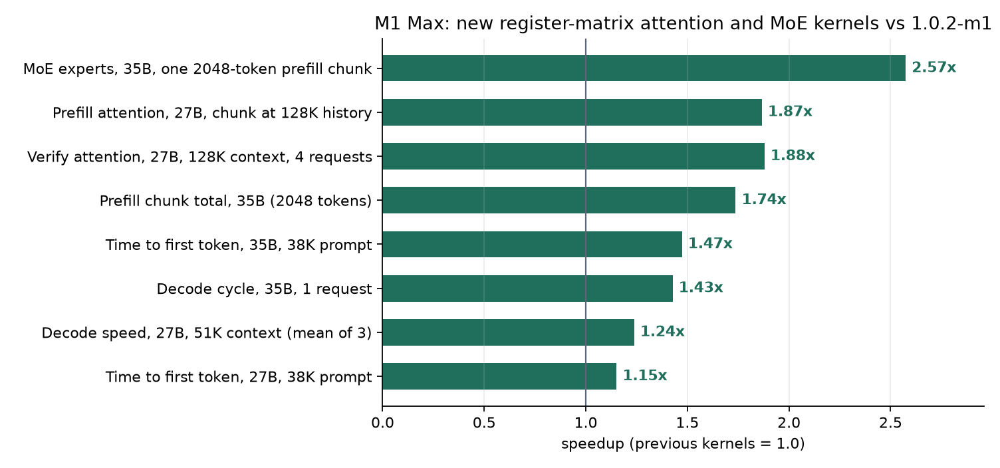
What changed. Same idea as last time: the M1 has fast matrix instructions (simdgroup_matrix) but no bfloat16, and Apple's MPP library is slow on it. So I wrote kernels that keep the whole tile in registers:
- Attention: the 8-bit KV cache is turned into exact half values, queries into fp32, and the M1's 8x8 matrix instructions compute QK and PV in fp32. One threadgroup handles 8 query positions for all query heads that share a KV head, so each KV block is read once for the whole group. The same tile now runs the DFlash verify step (8 draft tokens per request) and prompt processing.
- MoE experts (35B-A3B, 256 experts, top 8): the same 4-bit register kernel as my dense-layer kernel, with the gate and up projections computed together and SiLU applied in the same pass. The expert layers of one 2048-token chunk went from 2.58 s to 1.00 s.
Benchmark 1: npanj's splash-plus prompts (their script unmodified, 250 tokens, default reasoning, ABBA, mean of 2 runs):
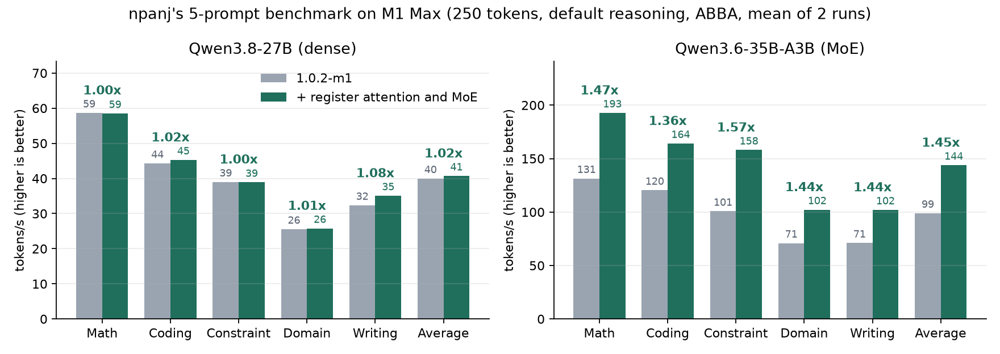
The 27B barely moves here: these prompts are short, so there is little attention work, and its dense layers already used my kernels. The 35B gains 1.36-1.57x on every prompt because the expert layers are a big share of each decode step.
Benchmark 2: attention per layer (Splash's own attention-sweep benchmark, median of 7):
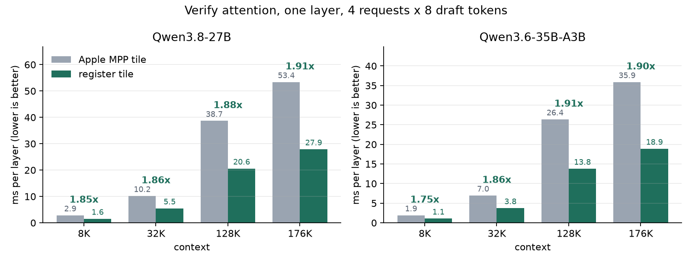
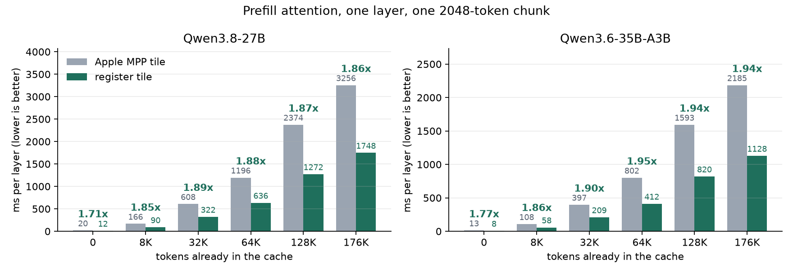
At 176K context, one decode step of the 27B used to spend ~215 ms in attention and now ~116 ms.
Benchmark 3: time to first token (real server, cold prompt, no prefix cache):
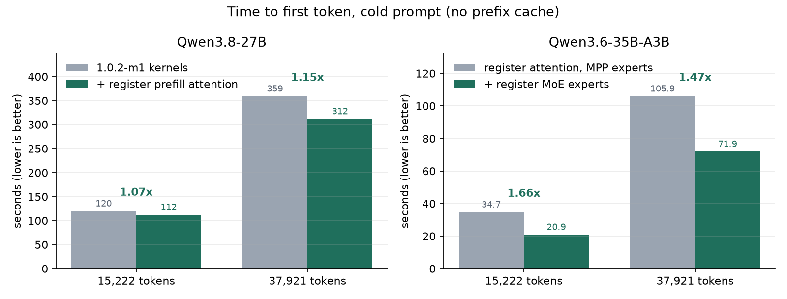
For the 27B the saving grows with context, because it comes from attention.
Benchmark 4: a real agent session. I gave OpenCode one prompt, build a Three.js galaxy simulation in 7 steps, with reasoning medium, and ran it with each model on this build. Decode speed per turn as the context grew (turns with 500+ generated tokens; almost all prompt tokens came from Splash's prefix cache):
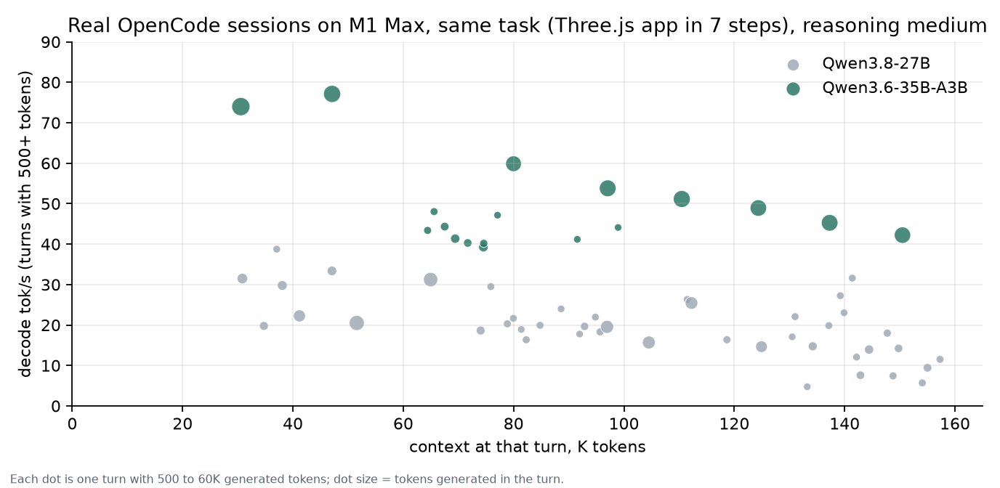
| Context | Qwen3.8-27B | Qwen3.6-35B-A3B |
|---|---|---|
| 30-64K | ~30 tok/s | ~75 tok/s |
| 64-96K | ~20 tok/s | ~43 tok/s |
| 96-128K | ~20 tok/s | ~51 tok/s |
| 128-157K | ~14 tok/s | ~45 tok/s |
Medians per range. Speed depends on the text as well as the context: whole-file writes of code draft well and run faster than short reasoning turns.
Benchmark 5: Splash vs oMLX vs MTPLX on the same M1 Max. Qwen3.8-27B, one engine at a time, each with its own fast setup for this model: Splash 1.0.2-m1.1 (4-bit + DFlash draft), oMLX with Qwen3.8-27B-oQ4e-fp16-mtp (4-bit + MTP), MTPLX with its optimized-speed profile. npanj's five prompts on a loop for 5 minutes, 250 tokens each, reasoning xhigh on all three (I checked that every engine gets the same prompt token counts, so the chat template and reasoning setting really match). Speed is measured on the client from the stream, the same way for all. Temperature, power and fan speed come from macmon; my fans follow a Macs Fan Control curve from 50 C to full speed at 80 C (GPU average).
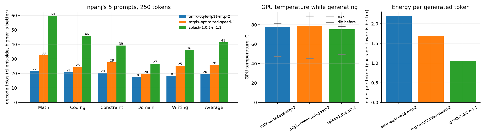
| Decode | GPU temp while generating | Time above 80 C | Energy per token | Engine memory after a 44K prompt (peak) | |
|---|---|---|---|---|---|
| oMLX | 19.8 tok/s | 77.7 C | 0% | 2.20 J | 23 GB (31) |
| MTPLX | 25.9 tok/s | 78.8 C | 43% | 1.69 J | 35 GB (40) |
| Splash | 41.5 tok/s | 75.3 C | 0% | 1.06 J | 21 GB (21) |
Memory: for oMLX and MTPLX, the process's physical footprint from macOS footprint; for Splash, its own count of every GPU allocation (weights, draft model, KV cache), because it maps the weights from disk and footprint does not see them. Splash reserves its memory up front, so its peak equals its current size.
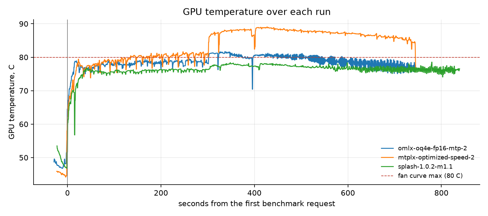
Fans were at full speed with every engine. Splash stayed under 80 C the whole time while generating 1.6x faster, and none of the three throttled (GPU clock unchanged from start to end). Energy is package power integrated over the generation time, so faster and cooler shows up as fewer joules per token.
A warning about MTPLX in this mode: the GPU average peaked at 89 C during prefill, and individual GPU sensors jumped to 95-97 C, with the fans already at full speed. At that point the cooling is working at its limit. I would not leave a Mac running like that overnight: sustained temperatures at the edge of what the cooling can handle are the kind of load that ages the chip faster. Whatever engine you use, I strongly recommend a fan curve (e.g. Macs Fan Control on the GPU cluster average) that reaches full speed at 80-85 C.
Prefill is the honest weak spot:
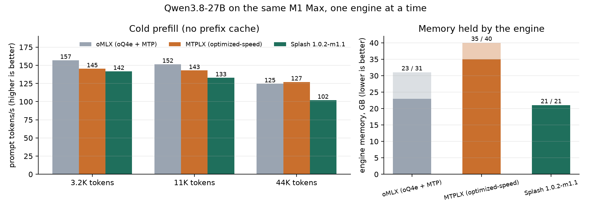
On short prompts all three are within ~10%, but at 44K tokens the MLX engines are ~20% faster (125-127 vs 102 tok/s). I profiled it: 96% of a short prefill is the 4-bit matrix kernel, and at long context the rest is attention plus an effect of how the work is submitted to the GPU, which I found costs about 10% at 44K. That's the next thing to work on. Splash's own prefill checkpoints (it saves the model state every 4096 tokens so a long request can resume and a repeated prefix is reused) cost only ~1%.
Even with the slower prefill, in practice, and especially in long agent sessions, Splash is right now the most stable engine I've used on this Mac: it's the one that gets to the end of the session.
Why no LM Studio / llama.cpp in the table: with the GGUF build of this model I get 14-15 tok/s on the first prompt and 7-8 tok/s once a session gets longer. That's so far behind that there was no point in a full run.
Quality. I dumped the model's next-token probabilities on the same greedy prompts for each build and compared them position by position:
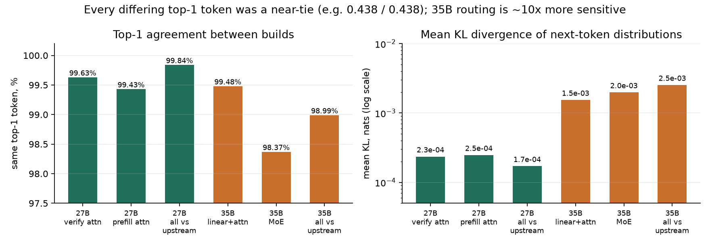
The 35B is about 10x more sensitive than the 27B to any change in rounding, because a tiny difference can flip which of the 256 experts gets picked. Even my earlier kernels, before the MoE change, already moved it by 1.5e-3. Every differing top token I checked was a near-tie (e.g. 0.438 vs 0.438). On 54 physics and arithmetic word problems with answers computed in Python, both models get 54/54 on both the upstream kernels and mine, in about half the time (the 35B upstream run also wrote the probability dump, so part of its gap is disk I/O):
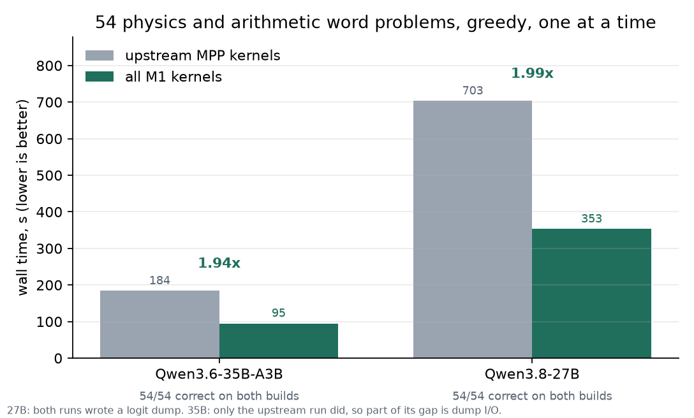
Try it:
curl -fsSL https://github.com/paperniuk/splash/releases/download/1.0.2-m1.1/install-m1.sh | sh
splash-m1 serve --model incoai/Qwen3.6-35B-A3B-Splash
It installs as splash-m1 next to Homebrew's splash, and models are shared with it. Tested on an M1 Max. M1 Pro/Ultra and M2 use the same code path; reports welcome.
Links
- My M1/M2 port: https://github.com/paperniuk/splash (branch
apple7-m1-kernels, releases on the Releases page) - Splash by Inco: https://github.com/incoai/splash
- npanj's splash-plus benchmark: https://github.com/npanj/splash-plus
This is an unofficial community port: the engine, the models and the draft models are Inco's. Thanks to npanj for the benchmark, and to everyone who tested the first release, sent logs and reported bugs; the higher default output limit in this release came from one of those reports. If this is useful to you, please star all three repos: the original Splash, npanj's benchmark and the port.